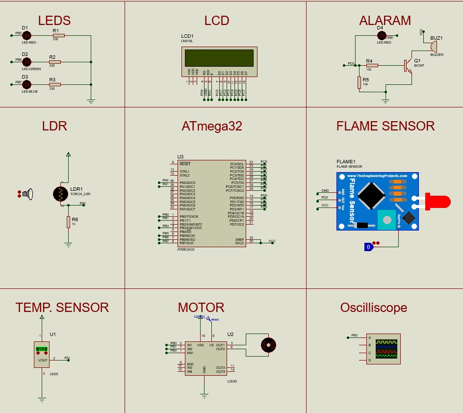

🏠 Smart Home Automation System
Overview
The Smart Home Automation System is an embedded solution designed to automate home lighting, temperature control, and fire detection. The system uses an LDR sensor to monitor ambient light intensity, an LM35 sensor for temperature measurement, and a flame sensor for safety monitoring. Fan speed is automatically adjusted using PWM motor control, while an LCD provides real-time feedback about the system status.
Objectives
- Automate home lighting control.
- Control fan speed based on temperature.
- Monitor environmental conditions in real time.
- Implement fire detection and alarm functionality.
- Provide real-time LCD feedback.
- Improve comfort, safety, and energy efficiency.
Key Features
- Automatic Lighting Control using LDR.
- Temperature-Based Fan Speed Control.
- PWM Motor Control.
- Fire Detection & Alarm System.
- Real-Time LCD Monitoring.
- LED Intensity Indication.
- Embedded Automation Logic.
- Environmental Monitoring.
System Architecture
- ATmega32 Microcontroller.
- LM35 Temperature Sensor.
- LDR Light Sensor.
- Flame Sensor.
- 16×2 LCD Display.
- DC Fan Motor.
- PWM Driver.
- LED Indicators.
- Buzzer Alarm.
- ADC Module.
Technologies Used
- ATmega32
- Embedded C
- ADC Driver
- PWM Driver
- GPIO Driver
- LCD Driver
- LM35 Sensor
- LDR Sensor
- Flame Sensor
- Proteus Simulation
Automation Logic
- Light intensity below 15% activates all LEDs.
- Light intensity between 16% and 50% activates the Red and Green LEDs.
- Light intensity between 51% and 70% activates only the Red LED.
- Light intensity above 70% turns all LEDs off.
- Fan speed automatically changes according to room temperature.
- Fire detection activates the buzzer and displays a critical alert on the LCD.
Challenges & Solutions
-
Challenge:
Controlling multiple home subsystems simultaneously.
Solution: Integrated lighting, temperature control, and fire detection into one embedded platform. -
Challenge:
Smooth fan speed regulation.
Solution: Implemented PWM-based motor control using Timer0. -
Challenge:
Providing immediate safety alerts.
Solution: Added flame detection with buzzer notification and LCD warning messages.
Results
- Successful smart lighting automation.
- Reliable temperature-based fan control.
- Accurate fire detection and alerting.
- Stable real-time LCD monitoring.
- Efficient PWM motor control.
- Fully functional smart home prototype.
Future Improvements
- Mobile Application Integration.
- IoT Remote Monitoring.
- Wireless Sensor Network.
- Smart Energy Management.
- Cloud-Based Automation Control.
- Voice Assistant Integration.
Gallery

Complete Smart Home Automation System Design